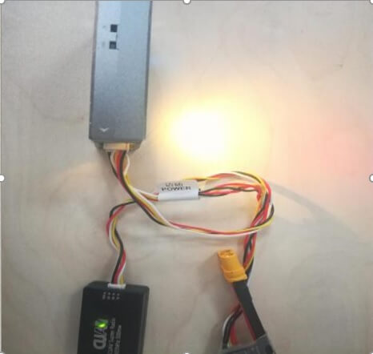
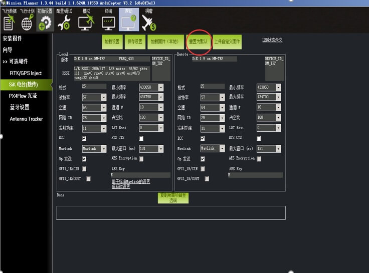
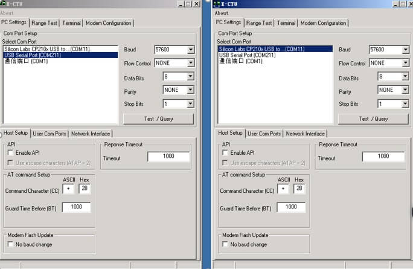
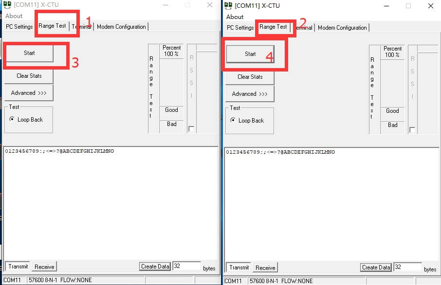

3DR数传故障排除教程
一．无法连接：
1.检查线材有没损坏或者不良，线序有无错误的；检查数传指示灯是否亮，天线是否插好，天线接口有无松动，飞控是否正常（用usb连接是否能连接上），注意连接数传时不能连接usb，否则不能连接。

2.检查两端参数是否一致，加载参数观察两端参数是否一致，不一致修改参数至一致，一致后先做恢复设置操作，再测试是否正常。

3.用x-tcu软件测试ttl端与usb端是否能正常通信，两端连接上电脑（两端不上天线相对10cmn以下放置于桌面），打开x-tcu软件（连续点击两次打开同时打开两个相同界面）分别选择对应的端口，注意波特率为57600


点击range test,再点击star

信号柱表示信号强度一直处于高位表示并且没有一直跳出错误提示表示数传正常，一直处于低位或者
没有则是通信不正常，先检查参数是否一致，
恢复默认参数再测试.
4.检查飞控参数设置，飞控连接上mp地面站，点击配置->全部参数表—>找到SERIAL1_BAUD参数，确认参数是否为57，不是就修改成57，点击写入参数，重启飞控，连接数传.
二．距离近，先进行重置数传参数，再把功率调到最大，还是不行换天线测试（测试前需先确认是在开阔的地方）。
三．无法调到最大功率后无法连接，重置参数，再配置参数（先先确认设置的最大参数不超过产品最大功率限制）。
四．无端口，在设备管理上确认有无端口还是无驱动（无驱动设备显示前面有个叹号，或者驱动安装失败），请下载驱动手动安装
五．相关软件驱动链接：
3DR / XBEE / XTEND 数传驱动
32位：
http://www.ftdichip.com/Drivers/CDM/CDM%20v2.12.04%20WHQL%20Certified.zip
64位：
http://www.ftdichip.com/Drivers/CDM/CDM%20v2.12.04%20WHQL%20Certified.zip
xbee资料：http://pan.baidu.com/s/1sjsrpUX（里面有x-ctu软件）